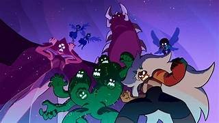

Hola, en este apartadohablaremos sobre el Genero de la serie "Steven Universe"

Genero Principal
El género principal de la serie "Steven Universe" es la animación de aventuras y fantasía.
La historia sigue las aventuras de Steven Universe y las Gemas de Cristal mientras protegen la Tierra
de diversas amenazas, exploran su propia identidad y enfrentan desafíos tanto emocionales como físicos.
Aunque la serie está dirigida principalmente a un público infantil y juvenil, también aborda temas
profundos y emocionales que atraen a espectadores de todas las edades. Además del género de
aventuras y fantasía, "Steven Universe" también incorpora elementos de comedia, drama y ciencia
ficción en su narrativa, lo que contribuye a su riqueza y variedad temática.